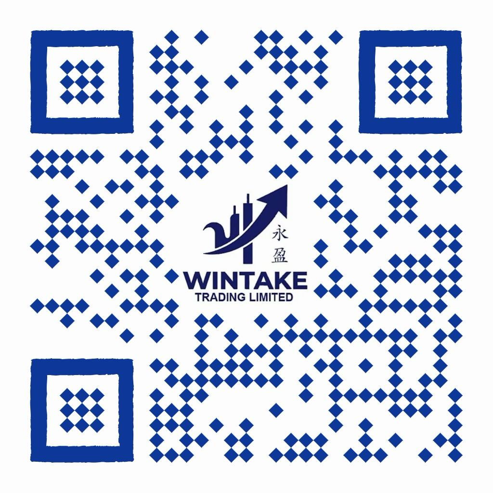

ABOUT WINTAKE
Global Sourcing, Industrial Excellence

Wintake Trading Limited is a premier global trading firm specializing in the strategic sourcing and distribution of critical industrial raw materials.
With a decade of foundational expertise in the natural resources sector, Wintake bridges the gap between primary extraction and industrial application, ensuring a seamless supply chain for essential commodities.
🏆
Proven Reliability
Over ten years of navigating complex global trade regulations and logistics.
🔬
Technical Knowledge
Deep insight into the chemical and physical properties of ores and metals.
🌍
Strategic Sourcing
Established relationships at the source to ensure competitive pricing and consistent supply.
🌍
QR Code
